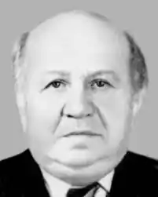

Бухбіндер Йосип Шмульович народився 25 грудня 1908 р. у м. Черняхові на Житомирщині в сім'ї стельмаха. П'ятнадцятирічним юнаком закінчив місцеву єврейську школу робітничої молоді і поступив на роботу в житомирську шевську майстерню. Через півтора року профспілка взуттєвиків направила його на навчання до Одеського єврейського педтехнікуму, після закінчення якого він працював учителем єврейської мови і літератури в м. Кам'янці-Подільському.
Восени 1929 р. був покликаний до лав Червоної Армії. Служив командиром кулеметного взводу в легендарному Таращанському полку 44-ї стрілецької дивізії ім. Щорса. Але через тяжку недугу був комісований з армії і назавжди знятий з військового обліку.
1935 р. закінчив історичний факультет, єврейського сектора Київського педінституту. Наступного року був зарахований на посаду літпрацівника в редакції республіканської газети "Дер Штерн", де працював до липня 1941 р. Літературною творчістю Бухбіндер почав займатися ще в студентські роки. В єврейській періодиці регулярно з'являлися добірки його віршів, були видрукувані поеми "Атаман Боженко" та "Пісня старого шевця". В передвоєнні роки побачили світ поетичні книжки "Командир Сизов" (1936) і "Ліричні мотиви" (1940). В серпні 1941 р., коли під стінами Києва зашаленіло криваве бойовище з ударним угрупованням фельдмаршала фон Рейхенау, Бухбіндер разом із М. Рильським, ГІ. Тичиною, В. Сосюрою, І. Фефером, Д. Гофштейном, Н. Рибаком та іншими письменниками за розпорядженням уряду республіки був евакуйований до м. Уфи. В сувору пору Великої Вітчизняної війни він написав чимало віршів, поем, нарисів про смертний двобій із фашистськими завойовниками, які друкувалися систематично у радянській та прогресивній зарубіжній пресі. Повернувшись після визволення України до Києва, Бухбіндер напружено працював над створенням книги про ратний подвиг радянських народів у найкривавішій в історії людства війні. Але після розгрому в 1948 р. Антифашистського єврейського комітету над країною стала стрімко загусати зловісна примара нового смерчу сталінських репресій. Не поминув цей смерч і поета Бухбіндера. Пізньої ночі 26 квітня 1951 р. до його помешкання вдерлися агенти МДБ, пред'явили ордер на арешт і вчинили розгромний десятигодинний трус, після чого реквізували частину приватної бібліотеки і готовий до друку рукопис останньої книги (невдовзі за постановою слідчих органів він був спалений). З тієї квітневої ночі почалися для Бухбіндера "ходіння по муках". Тринадцять місяців провів він у спецв'язниці МДБ. Затим його відконвоювали до харківської тюремної психушки і помістили в камеру буйнохворих, аби вирвати зізнання в "контрреволюційній антирадянській діяльності". Проте ні голод, ні знущання не зломили поета. На допитах він рішуче заперечував висновки експертної комісії в складі трьох білялітературних кандидатів наук, які за грошові подачки письмово стверджували, що всі його "твори пройняті отрутою антирадянщини й сіонізму". Влітку 1952 р. Бухбіндера перевели до Лук'янівської в'язниці в Києві, де ознайомили з утвердженим сумнозвісною "трійкою" вироком: за активну антирадянську націоналістичну діяльність ув'язнити на 10 років у виправно-трудових таборах особливого режиму. За кілька тижнів він був етапований через пересильні тюрми в спецтабір № 3, що містився в с. Кінгір неподалік Джезказгана. Так поет став в'язнем спецтабору з особистим номером СЗЗ-362. Працюючи на шахті в найсуворішій ізоляції, Бухбіндер лише на початку 1955 р. довідався про смерть "батька всіх народів". І все ж до волі ще було дуже далеко. Спершу його перевели до інвалідного табору с. Терехти, а звідти, як амністованого, відправили на поселення в м. Теміртау. Вибратися з-за колючого дроту і змити тавро "ворога народу" Бухбіндеру допомогли Максим Рильський і Олександр Фадєєв. Саме завдяки їхнім настійним клопотанням пленум Верховного Суду СРСР 19 січня 1957 р. скасував постанову "трійки" і слідчу справу стосовно Бухбіндера припинив "за недоведеністю пред'явлених йому звинувачень". В лютому 1957 р. поет повернувся до Києва і був відновлений у рядах Спілки письменників, в якій він перебував з 1937 р. Відтоді він повністю присвятив себе літературній творчості. Незважаючи на пережиті моральні потрясіння й підірване здоров'я, Бухбіндер написав і видрукував за останні десятиліття такі поетичні книжки: "Останній сніг" (1964), "Дорога життя" (1966), "Між хвилями" (1970), "Ясними очима" (1975), "Тобі, мій друг" (1980), "Світлий погляд" (1981), "Близька далечінь" (1984, 1987, 1988).